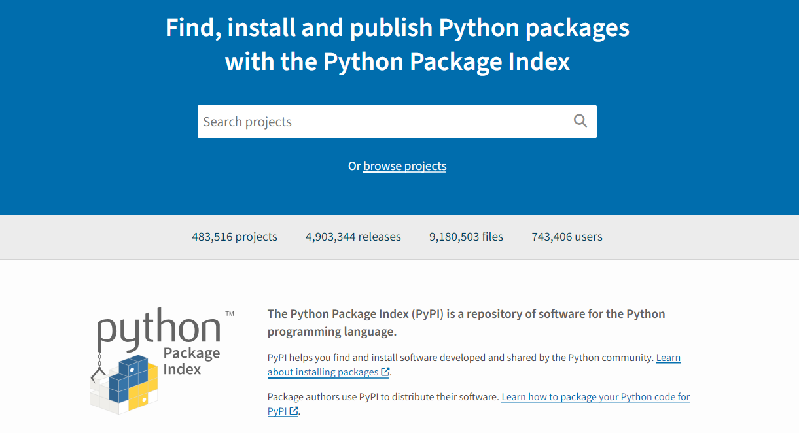

<!DOCTYPE html>
<html lang="en">
  <head>
    <meta charset="utf-8" />
    <meta name="viewport" content="width=device-width, initial-scale=1.0, maximum-scale=1.0, user-scalable=no" />
	<link rel="shortcut icon" href="./attachments/sigma.png" type="image/x-icon">
    <title>Skill Disk Seminar</title>
    <link rel="stylesheet" href="dist/reveal.css" />
    <link rel="stylesheet" href="dist/theme/skillppt.css" id="theme" />
    <link rel="stylesheet" href="plugin/highlight/zenburn.css" />
	<link rel="stylesheet" href="css/layout.css" />
	<link rel="stylesheet" href="plugin/customcontrols/style.css">
	<link rel="stylesheet" href="plugin/chalkboard/style.css">

	<link rel="stylesheet" href="plugin/reveal-pointer/pointer.css" />


    <script defer src="dist/fontawesome/all.min.js"></script>

	<script type="text/javascript">
		var forgetPop = true;
		function onPopState(event) {
			if(forgetPop){
				forgetPop = false;
			} else {
				parent.postMessage(event.target.location.href, "app://obsidian.md");
			}
        }
		window.onpopstate = onPopState;
		window.onmessage = event => {
			if(event.data == "reload"){
				window.document.location.reload();
			}
			forgetPop = true;
		}

		function fitElements(){
			const itemsToFit = document.getElementsByClassName('fitText');
			for (const item in itemsToFit) {
				if (Object.hasOwnProperty.call(itemsToFit, item)) {
					var element = itemsToFit[item];
					fitElement(element,1, 1000);
					element.classList.remove('fitText');
				}
			}
		}

		function fitElement(element, start, end){

			let size = (end + start) / 2;
			element.style.fontSize = `${size}px`;

			if(Math.abs(start - end) < 1){
				while(element.scrollHeight > element.offsetHeight){
					size--;
					element.style.fontSize = `${size}px`;
				}
				return;
			}

			if(element.scrollHeight > element.offsetHeight){
				fitElement(element, start, size);
			} else {
				fitElement(element, size, end);
			}		
		}


		document.onreadystatechange = () => {
			fitElements();
			if (document.readyState === 'complete') {
				if (window.location.href.indexOf("?export") != -1){
					parent.postMessage(event.target.location.href, "app://obsidian.md");
				}
				if (window.location.href.indexOf("print-pdf") != -1){
					let stateCheck = setInterval(() => {
						clearInterval(stateCheck);
						window.print();
					}, 250);
				}
			}
	};


        </script>
  </head>
  <body>
	<div id="logo" style="position: fixed; top: 20px; left: 20px; z-index: 1; height:3rem;">
        <a href="https://skilldisk.com" target="_blank"></a>
    </div>
    <div class="reveal">
      <div class="slides"><section  data-markdown><script type="text/template"><!-- .slide: class="drop" -->
<div class="" style="position: absolute; left: 0px; top: 0px; height: 900px; width: 1600px; min-height: 900px; display: flex; flex-direction: column; align-items: center; justify-content: center" absolute="true">

<split even gap="3">


</split>
</div></script></section><section ><section data-markdown><script type="text/template"><!-- .slide: class="drop" -->
<div class="" style="position: absolute; left: 0px; top: 0px; height: 900px; width: 1600px; min-height: 900px; display: flex; flex-direction: column; align-items: center; justify-content: center" absolute="true">


# Skill Disk
</div></script></section><section data-markdown><script type="text/template"><!-- .slide: class="drop" -->
<div class="" style="position: absolute; left: 0px; top: 0px; height: 900px; width: 1600px; min-height: 900px; display: flex; flex-direction: column; align-items: center; justify-content: center" absolute="true">

## Vision

"To be a pioneer in empowering the future generation by imparting <span class="fragment highlight-green"> pristine knowledge </span> which can greatly enhance the cognitive ability, through ceaseless <span class="fragment highlight-green">innovation</span> in <span class="fragment highlight-green">education , research, and creativity.</span>"
</div></script></section><section data-markdown><script type="text/template"><!-- .slide: class="drop" -->
<div class="" style="position: absolute; left: 0px; top: 0px; height: 900px; width: 1600px; min-height: 900px; display: flex; flex-direction: column; align-items: center; justify-content: center" absolute="true">

<div class="" style="position: absolute; left: 5%; top: 5%; height: 20%; width: 90%; display: flex; flex-direction: column; align-items: center; justify-content: center" >

# 4-A 
</div>

<div class="logo_hover fragment" style="position: absolute; left: 4%; top: 40%; height: 20%; width: 20%; display: flex; flex-direction: column; align-items: center; justify-content: center" data-fragment-index="1">

## ASPIRE
</div>

<div class="tri_hover fragment" style="position: absolute; left: 28%; top: 40%; height: 20%; width: 20%; display: flex; flex-direction: column; align-items: center; justify-content: center" >

## Analyze <!-- .element: style="color: #0f0" -->
</div>

<div class="sec_hover fragment" style="position: absolute; left: 52%; top: 40%; height: 20%; width: 20%; display: flex; flex-direction: column; align-items: center; justify-content: center" >

## Acquire <!-- .element: style="color: #26f7fd" -->
</div>

<div class="logo_hover fragment" style="position: absolute; left: 76%; top: 40%; height: 20%; width: 20%; display: flex; flex-direction: column; align-items: center; justify-content: center" >

## Apply
</div>
</div></script></section></section><section  data-markdown><script type="text/template"><!-- .slide: class="drop" -->
<div class="" style="position: absolute; left: 0px; top: 0px; height: 900px; width: 1600px; min-height: 900px; display: flex; flex-direction: column; align-items: center; justify-content: center" absolute="true">

<div class="" style="position: absolute; left: 10%; top: 10%; height: 10%; width: 80%; display: flex; flex-direction: column; align-items: center; justify-content: center" align="center">

## Agenda 
</div>
<div class="" style="position: absolute; left: 5%; top: 10%; height: 80%; width: 80%; display: flex; flex-direction: column; align-items: flex-start; justify-content: space-evenly" align="left">

- Why 3 in 1 file ?
- How we do it ?
- Programming Languages
- Other features
- Live Demo
- Hands On
- Q&A Session
</div>
</div></script></section><section ><section data-markdown><script type="text/template"><!-- .slide: class="drop" -->
<div class="" style="position: absolute; left: 0px; top: 0px; height: 900px; width: 1600px; min-height: 900px; display: flex; flex-direction: column; align-items: center; justify-content: center" absolute="true">

# ? <!-- .element: style="font-size: 26rem" class="fragment highlight-red" -->

## 3 in 1
</div></script></section><section data-markdown><script type="text/template"><!-- .slide: class="drop" -->
<div class="" style="position: absolute; left: 0px; top: 0px; height: 900px; width: 1600px; min-height: 900px; display: flex; flex-direction: column; align-items: center; justify-content: center" absolute="true">


- &shy;<!-- .element: class="fragment" data-fragment-index="1" -->Reference Material
- &shy;<!-- .element: class="fragment" data-fragment-index="2" -->Detailed Content
- &shy;<!-- .element: class="fragment" data-fragment-index="3" -->Text, Images, Tables, link, etc.
</div></script></section><section data-markdown><script type="text/template"><!-- .slide: class="drop" -->
<div class="" style="position: absolute; left: 0px; top: 0px; height: 900px; width: 1600px; min-height: 900px; display: flex; flex-direction: column; align-items: center; justify-content: center" absolute="true">

<div class="" style="position: absolute; left: 10%; top: 10%; height: 35%; width: 35%; display: flex; flex-direction: column; align-items: center; justify-content: center" >


MS Word
</div>

<div class="" style="position: absolute; left: 60%; top: 10%; height: 35%; width: 35%; display: flex; flex-direction: column; align-items: center; justify-content: center" >


Google Docs
</div>

<div class="" style="position: absolute; left: 10%; top: 60%; height: 35%; width: 35%; display: flex; flex-direction: column; align-items: center; justify-content: center" >


WPS
</div>

<div class="" style="position: absolute; left: 60%; top: 60%; height: 35%; width: 35%; display: flex; flex-direction: column; align-items: center; justify-content: center" >


Open Office
</div>
</div></script></section></section><section ><section data-markdown><script type="text/template"><!-- .slide: class="drop" -->
<div class="" style="position: absolute; left: 0px; top: 0px; height: 900px; width: 1600px; min-height: 900px; display: flex; flex-direction: column; align-items: center; justify-content: center" absolute="true">


- &shy;<!-- .element: class="fragment" data-fragment-index="1" -->Communicate through slides
- &shy;<!-- .element: class="fragment" data-fragment-index="2" -->Highlighted Points
- &shy;<!-- .element: class="fragment" data-fragment-index="3" -->Images, Tables, Videos, etc.
- &shy;<!-- .element: style="color: red" class="fragment" data-fragment-index="4" -->Paragraph should be avoided
</div></script></section><section data-markdown><script type="text/template"><!-- .slide: class="drop" -->
<div class="" style="position: absolute; left: 0px; top: 0px; height: 900px; width: 1600px; min-height: 900px; display: flex; flex-direction: column; align-items: center; justify-content: center" absolute="true">

<div class="" style="position: absolute; left: 10%; top: 10%; height: 35%; width: 35%; display: flex; flex-direction: column; align-items: center; justify-content: center" >


MS Power Point
</div>

<div class="" style="position: absolute; left: 60%; top: 10%; height: 35%; width: 35%; display: flex; flex-direction: column; align-items: center; justify-content: center" >


Google Slides
</div>

<div class="" style="position: absolute; left: 10%; top: 60%; height: 35%; width: 35%; display: flex; flex-direction: column; align-items: center; justify-content: center" >


Prezi
</div>

<div class="" style="position: absolute; left: 60%; top: 60%; height: 35%; width: 35%; display: flex; flex-direction: column; align-items: center; justify-content: center" >


Open Office Power Point
</div>
</div></script></section></section><section ><section data-markdown><script type="text/template"><!-- .slide: class="drop" -->
<div class="" style="position: absolute; left: 0px; top: 0px; height: 900px; width: 1600px; min-height: 900px; display: flex; flex-direction: column; align-items: center; justify-content: center" absolute="true">


- &shy;<!-- .element: class="fragment" data-fragment-index="1" -->Writing code and Executing
- &shy;<!-- .element: class="fragment" data-fragment-index="2" -->Editor
- &shy;<!-- .element: class="fragment" data-fragment-index="3" -->Integrated Development Environment (IDE)
</div></script></section><section data-markdown><script type="text/template"><!-- .slide: class="drop" -->
<div class="" style="position: absolute; left: 0px; top: 0px; height: 900px; width: 1600px; min-height: 900px; display: flex; flex-direction: column; align-items: center; justify-content: center" absolute="true">

<div class="" style="position: absolute; left: 10%; top: 10%; height: 35%; width: 35%; display: flex; flex-direction: column; align-items: center; justify-content: center" >


VS Code
</div>

<div class="" style="position: absolute; left: 60%; top: 10%; height: 35%; width: 35%; display: flex; flex-direction: column; align-items: center; justify-content: center" >


Pycharm IDE
</div>

<div class="" style="position: absolute; left: 10%; top: 60%; height: 35%; width: 35%; display: flex; flex-direction: column; align-items: center; justify-content: center" >


Vim
</div>

<div class="" style="position: absolute; left: 60%; top: 60%; height: 35%; width: 35%; display: flex; flex-direction: column; align-items: center; justify-content: center" >


Sublime
</div>
</div></script></section><section data-markdown><script type="text/template"><!-- .slide: class="drop" -->
<div class="" style="position: absolute; left: 0px; top: 0px; height: 900px; width: 1600px; min-height: 900px; display: flex; flex-direction: column; align-items: center; justify-content: center" absolute="true">

# 3 --> 1 
## file
</div></script></section></section><section ><section data-markdown><script type="text/template"><!-- .slide: class="drop" -->
<div class="" style="position: absolute; left: 0px; top: 0px; height: 900px; width: 1600px; min-height: 900px; display: flex; flex-direction: column; align-items: center; justify-content: center" absolute="true">

# How we do it ?
</div></script></section><section data-markdown><script type="text/template"><!-- .slide: class="drop" -->
<div class="" style="position: absolute; left: 0px; top: 0px; height: 900px; width: 1600px; min-height: 900px; display: flex; flex-direction: column; align-items: center; justify-content: center" absolute="true">

<div class="" style="position: absolute; left: 0%; top: 0%; height: 100%; width: 50%; display: flex; flex-direction: column; align-items: center; justify-content: center" >


</div>
<div class="" style="position: absolute; left: 50%; top: 10%; height: 80%; width: 50%; display: flex; flex-direction: column; align-items: center; justify-content: center" >


</div>
</div></script></section><section data-markdown><script type="text/template"><!-- .slide: class="drop" -->
<div class="" style="position: absolute; left: 0px; top: 0px; height: 900px; width: 1600px; min-height: 900px; display: flex; flex-direction: column; align-items: center; justify-content: center" absolute="true">

<div class="" style="position: absolute; left: 0%; top: 0%; height: 100%; width: 50%; display: flex; flex-direction: column; align-items: center; justify-content: center" >


</div>

<div class="" style="position: absolute; left: 50%; top: 0%; height: 100%; width: 50%; display: flex; flex-direction: column; align-items: center; justify-content: center" >


</div>
</div></script></section><section data-markdown><script type="text/template"><!-- .slide: class="drop" -->
<div class="" style="position: absolute; left: 0px; top: 0px; height: 900px; width: 1600px; min-height: 900px; display: flex; flex-direction: column; align-items: center; justify-content: center" absolute="true">

<div class="" style="position: absolute; left: 0%; top: 0%; height: 100%; width: 50%; display: flex; flex-direction: column; align-items: center; justify-content: center" >


</div>

<div class="" style="position: absolute; left: 50%; top: 0%; height: 100%; width: 50%; display: flex; flex-direction: column; align-items: center; justify-content: center" >



</div>
</div></script></section><section data-markdown><script type="text/template"><!-- .slide: class="drop" -->
<div class="" style="position: absolute; left: 0px; top: 0px; height: 900px; width: 1600px; min-height: 900px; display: flex; flex-direction: column; align-items: center; justify-content: center" absolute="true">

<div class="" style="position: absolute; left: 0%; top: 0%; height: 100%; width: 50%; display: flex; flex-direction: column; align-items: center; justify-content: center" >


</div>

<div class="" style="position: absolute; left: 50%; top: 0%; height: 100%; width: 50%; display: flex; flex-direction: column; align-items: center; justify-content: center" >

### Easy to read syntax
</div>
</div></script></section><section data-markdown><script type="text/template"><!-- .slide: class="drop" -->
<div class="" style="position: absolute; left: 0px; top: 0px; height: 900px; width: 1600px; min-height: 900px; display: flex; flex-direction: column; align-items: center; justify-content: center" absolute="true">

<div class="" style="position: absolute; left: 0%; top: 0%; height: 100%; width: 50%; display: flex; flex-direction: column; align-items: center; justify-content: center" >


</div>

<div class="" style="position: absolute; left: 50%; top: 0%; height: 100%; width: 50%; display: flex; flex-direction: column; align-items: center; justify-content: center" >

### A shareable document
- &shy;<!-- .element: class="fragment" data-fragment-index="1" -->Computer Code
- &shy;<!-- .element: class="fragment" data-fragment-index="2" -->Plain language description
- &shy;<!-- .element: class="fragment" data-fragment-index="3" -->Data
- &shy;<!-- .element: class="fragment" data-fragment-index="4" -->Rich Visualizations
</div>
</div></script></section></section><section ><section data-markdown><script type="text/template"><!-- .slide: class="drop" -->
<div class="" style="position: absolute; left: 0px; top: 0px; height: 900px; width: 1600px; min-height: 900px; display: flex; flex-direction: column; align-items: center; justify-content: center" absolute="true">

# Programming Languages
</div></script></section><section data-markdown><script type="text/template"><!-- .slide: class="drop" -->
<div class="" style="position: absolute; left: 0px; top: 0px; height: 900px; width: 1600px; min-height: 900px; display: flex; flex-direction: column; align-items: center; justify-content: center" absolute="true">

<div class="fragment" style="position: absolute; left: 5%; top: 10%; height: 30%; width: 30%; display: flex; flex-direction: column; align-items: center; justify-content: center" data-fragment-index="1">


</div>
<div class="fragment" style="position: absolute; left: 35%; top: 10%; height: 30%; width: 30%; display: flex; flex-direction: column; align-items: center; justify-content: center" data-fragment-index="1">


</div>
<div class="fragment" style="position: absolute; left: 65%; top: 10%; height: 30%; width: 30%; display: flex; flex-direction: column; align-items: center; justify-content: center" data-fragment-index="1">


</div>

<div class="fragment" style="position: absolute; left: 5%; top: 60%; height: 30%; width: 30%; display: flex; flex-direction: column; align-items: center; justify-content: center" data-fragment-index="2">


</div>
<div class="fragment" style="position: absolute; left: 35%; top: 60%; height: 30%; width: 30%; display: flex; flex-direction: column; align-items: center; justify-content: center" data-fragment-index="2">


</div>
<div class="fragment" style="position: absolute; left: 65%; top: 60%; height: 30%; width: 30%; display: flex; flex-direction: column; align-items: center; justify-content: center" data-fragment-index="2">


</div>

<div class="fragment" style="position: absolute; left: 5%; top: 45%; height: 10%; width: 90%; display: flex; flex-direction: column; align-items: center; justify-content: center" data-fragment-index="3">

[List of Jupyter kernels](https://github.com/jupyter/jupyter/wiki/Jupyter-kernels)
</div>
</div>

<aside class="notes"><ol>
<li><a href="https://github.com/jupyter/jupyter/wiki/Jupyter-kernels">Jupyter kernels · jupyter/jupyter Wiki · GitHub</a></li>
<li><a href="https://jupyter.org/try">Project Jupyter | Try Jupyter</a></li>
</ol>
</aside></script></section></section><section ><section data-markdown><script type="text/template"><!-- .slide: class="drop" -->
<div class="" style="position: absolute; left: 0px; top: 0px; height: 900px; width: 1600px; min-height: 900px; display: flex; flex-direction: column; align-items: center; justify-content: center" absolute="true">

# Other Features
</div></script></section><section data-markdown><script type="text/template"><!-- .slide: class="drop" -->
<div class="" style="position: absolute; left: 0px; top: 0px; height: 900px; width: 1600px; min-height: 900px; display: flex; flex-direction: column; align-items: center; justify-content: center" absolute="true">


## Host it as a web page
</div></script></section><section data-markdown><script type="text/template"><!-- .slide: class="drop" -->
<div class="" style="position: absolute; left: 0px; top: 0px; height: 900px; width: 1600px; min-height: 900px; display: flex; flex-direction: column; align-items: center; justify-content: center" absolute="true">


## Executing the code on the fly with out any configuration.
</div></script></section><section data-markdown><script type="text/template"><!-- .slide: class="drop" -->
<div class="" style="position: absolute; left: 0px; top: 0px; height: 900px; width: 1600px; min-height: 900px; display: flex; flex-direction: column; align-items: center; justify-content: center" absolute="true">


## Code execution in browser
</div></script></section></section><section ><section data-markdown><script type="text/template"><!-- .slide: class="drop" -->
<div class="" style="position: absolute; left: 0px; top: 0px; height: 900px; width: 1600px; min-height: 900px; display: flex; flex-direction: column; align-items: center; justify-content: center" absolute="true">


</div></script></section><section data-markdown><script type="text/template"><!-- .slide: class="drop" -->
<div class="" style="position: absolute; left: 0px; top: 0px; height: 900px; width: 1600px; min-height: 900px; display: flex; flex-direction: column; align-items: center; justify-content: center" absolute="true">

- &shy;<!-- .element: class="fragment" data-fragment-index="1" -->Free/Libre and Open Source Software for Education
- &shy;<!-- .element: class="fragment" data-fragment-index="2" -->Project promotes the use of FLOSS tools.
- &shy;<!-- .element: class="fragment" data-fragment-index="3" -->Reduce dependency on proprietary software in educational institutions.
- &shy;<!-- .element: class="fragment" data-fragment-index="4" -->Improve the quality of education in our country.

[FOSSEE Web Site](https://fossee.in/) <!-- .element: class="fragment" -->
<br>
[Python Textbook Companion Project](https://tbc-python.fossee.in/completed-books/) <!-- .element: class="fragment" -->
</div></script></section></section><section ><section data-markdown><script type="text/template"><!-- .slide: class="drop" -->
<div class="" style="position: absolute; left: 0px; top: 0px; height: 900px; width: 1600px; min-height: 900px; display: flex; flex-direction: column; align-items: center; justify-content: center" absolute="true">

# Live Demo
</div></script></section><section data-markdown><script type="text/template"><!-- .slide: class="drop" -->
<div class="" style="position: absolute; left: 0px; top: 0px; height: 900px; width: 1600px; min-height: 900px; display: flex; flex-direction: column; align-items: center; justify-content: center" absolute="true">

- Joy of Mathematics Using Python [](https://mybinder.org/v2/gh/skilldisk/joy-of-mathematics-using-python/HEAD)
- Visualize data using python's Matplotlib. [](https://mybinder.org/v2/gh/skilldisk/Visualize-Data-using-Python-s-Matplotlib/HEAD)
- Octave [](https://mybinder.org/v2/gh/jupyter-xeus/xeus-octave/stable?urlpath=/lab/tree/notebooks/xeus-octave.ipynb) 
- C++ [](https://mybinder.org/v2/gh/jupyter-xeus/xeus-cling/stable?filepath=notebooks/xcpp.ipynb)
</div></script></section></section><section ><section data-markdown><script type="text/template"><!-- .slide: class="drop" -->
<div class="" style="position: absolute; left: 0px; top: 0px; height: 900px; width: 1600px; min-height: 900px; display: flex; flex-direction: column; align-items: center; justify-content: center" absolute="true">

# Snippets to follow along
</div></script></section><section data-markdown><script type="text/template"><!-- .slide: class="drop" -->
<div class="" style="position: absolute; left: 0px; top: 0px; height: 900px; width: 1600px; min-height: 900px; display: flex; flex-direction: column; align-items: center; justify-content: center" absolute="true">

- Download the code to work locally.
- Spin-up the Binder, link is in the readme.md.
</div></script></section></section><section  data-markdown><script type="text/template"><!-- .slide: class="drop" -->
<div class="" style="position: absolute; left: 0px; top: 0px; height: 900px; width: 1600px; min-height: 900px; display: flex; flex-direction: column; align-items: center; justify-content: center" absolute="true">

# Q&A Session
</div></script></section></div>
    </div>

    <script src="dist/reveal.js"></script>

    <script src="plugin/markdown/markdown.js"></script>
    <script src="plugin/highlight/highlight.js"></script>
    <script src="plugin/zoom/zoom.js"></script>
    <script src="plugin/notes/notes.js"></script>
    <script src="plugin/math/math.js"></script>
	<script src="plugin/mermaid/mermaid.js"></script>
	<script src="plugin/chart/chart.min.js"></script>
	<script src="plugin/chart/plugin.js"></script>
	<script src="plugin/customcontrols/plugin.js"></script>
	<script src="plugin/chalkboard/plugin.js"></script>
	<script src="plugin/reveal-pointer/pointer.js"></script>

    <script>
      function extend() {
        var target = {};
        for (var i = 0; i < arguments.length; i++) {
          var source = arguments[i];
          for (var key in source) {
            if (source.hasOwnProperty(key)) {
              target[key] = source[key];
            }
          }
        }
        return target;
      }

	  function isLight(color) {
		let hex = color.replace('#', '');

		// convert #fff => #ffffff
		if(hex.length == 3){
			hex = `${hex[0]}${hex[0]}${hex[1]}${hex[1]}${hex[2]}${hex[2]}`;
		}

		const c_r = parseInt(hex.substr(0, 2), 16);
		const c_g = parseInt(hex.substr(2, 2), 16);
		const c_b = parseInt(hex.substr(4, 2), 16);
		const brightness = ((c_r * 299) + (c_g * 587) + (c_b * 114)) / 1000;
		return brightness > 155;
	}

	var bgColor = getComputedStyle(document.documentElement).getPropertyValue('--r-background-color').trim();
	var isLight = isLight(bgColor);

	if(isLight){
		document.body.classList.add('has-light-background');
	} else {
		document.body.classList.add('has-dark-background');
	}

      // default options to init reveal.js
      var defaultOptions = {
        controls: true,
        progress: true,
        history: true,
        center: true,
        transition: 'default', // none/fade/slide/convex/concave/zoom
        plugins: [
          RevealMarkdown,
          RevealHighlight,
          RevealZoom,
          RevealNotes,
          RevealMath.MathJax3,
		  RevealMermaid,
		  RevealChart,
		  RevealCustomControls,
	      RevealPointer,
		  RevealChalkboard, 
        ],


    	allottedTime: 120 * 1000,

		mathjax3: {
			mathjax: 'plugin/math/mathjax/tex-mml-chtml.js',
		},
		markdown: {
		  gfm: true,
		  mangle: true,
		  pedantic: false,
		  smartLists: false,
		  smartypants: false,
		},

		mermaid: {
			theme: isLight ? 'default' : 'dark',
		},

		customcontrols: {
			controls: [
				{ icon: '<i class="fa fa-pen-square"></i>',
				title: 'Toggle chalkboard (B)',
				action: 'RevealChalkboard.toggleChalkboard();'
				},
				{ icon: '<i class="fa fa-pen"></i>',
				title: 'Toggle notes canvas (C)',
				action: 'RevealChalkboard.toggleNotesCanvas();'
				},
			]
		},
      };

      // options from URL query string
      var queryOptions = Reveal().getQueryHash() || {};

      var options = extend(defaultOptions, {"width":1600,"height":900,"margin":0.04,"controls":true,"progress":true,"slideNumber":false,"transition":"fade","transitionSpeed":"default"}, queryOptions);
    </script>

    <script>
      Reveal.initialize(options);
    </script>
  </body>

  <!-- created with Advanced Slides -->
</html>
